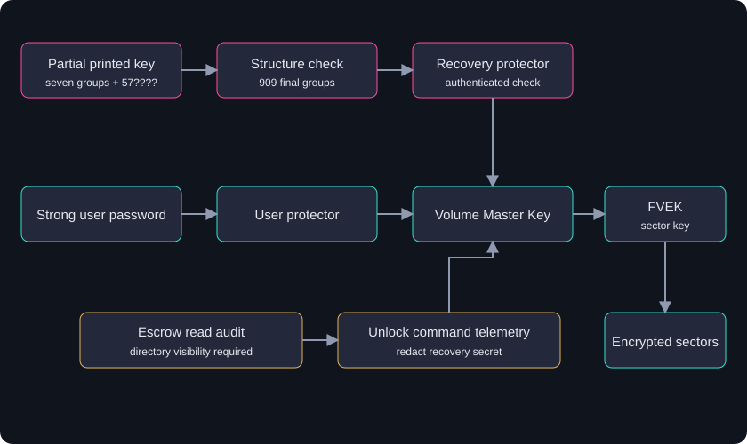

Abacus / Cyber Ops / CTF Writeups / Forensics / The Recovery Key That Survived the Fire
The Recovery Key That Survived the Fire
The page was burned, but the missing piece was smaller than it looked.
Summary
The challenge. Identify the encryption on a USB image and recover access without guessing the strong user password.
What I did. I checked the FVE metadata, validated the visible recovery-password structure, narrowed the last group to 909 possibilities, and followed the recorded BitCracker and dislocker verification path.
The result. The solve record reports a MAC-verified recovery-password hit and an independently decrypted EXFAT volume. The image metadata and 909-candidate count were checked again here.
The limit. The recovered password, extracted hash, and decrypted image are withheld. I could not independently rerun BitCracker, dislocker, or the platform submission in this review.
Case details
| Field | Value |
|---|---|
| Category | Forensics / disk encryption and key recovery |
| Difficulty | Medium |
| Tags | BitLocker, BitLocker To Go, FVE metadata, AES-CCM, recovery password, structural cryptanalysis, partial-knowledge attack, BitCracker, dislocker |
| Status | Solved-Verified in the challenge record |
| Material | 50 MiB raw USB image and a transcription of a partly burned numeric page |
| Goal | Identify the encryption product and unlock the volume without the user password |
| Checked from the image | -FVE-FS-, three matching metadata blocks, AES-XTS 128, user-password and recovery-password protectors |
| Reported outcome | BitCracker MAC match and dislocker output with an EXFAT boot sector |
| Boundary | The successful key, hash, decrypted content, and platform receipt are not public or independently replayed here |
Defensive proofs of concept for adapting this case to real environments: browse the tools on GitHub and the invented fixtures.
Solve Process Flow
The route had two turns worth keeping in view. I gave the technically correct cipher name to a question that expected a product name. Later, a custom recovery-key implementation rejected every candidate, and the reference tool found one in that same set.
flowchart TD
A[USB image: FVE signature] --> B[Three FVE metadata blocks]
B --> C[AES-XTS 128 and two password protectors]
C --> D[Q1: AES-XTS 128 rejected as answer granularity]
D --> E[BitLocker To Go from challenge context]
E --> F[Seven groups plus 57????]
F --> G[909 valid final groups]
G --> H[Custom KDF: zero matches]
H --> I[Reversed and end-burn readings rejected]
I --> J[BitCracker recovery mode with MAC check]
J --> K[Reported hit in chunk 31]
K --> L[Reported dislocker EXFAT decryption]
1. Problem Statement and Threat Scenario
I had a raw image of a removable drive and a transcription from a partly burned page. The image was 50 MiB. The page looked like a BitLocker recovery password, except that the last six-digit group ended after its first two digits. The challenge stipulated that the ordinary user password was strong enough to take off the table. My route was the recovery protector.
The story places the drive in a fictional adversary's staging area. My work was offline forensic recovery from acquired evidence, not access to a live system. A burn that leaves seven complete groups and two digits of the eighth may feel thorough. The exact number of remaining possibilities matters more than how damaged the page looks.
2. Techniques, Tooling, and Actions Taken
I started at the volume header. The OEM signature at offset 3 read -FVE-FS-; offsets at 0xB0 pointed to three FVE metadata copies. All three copies on the available image agreed on the method and the two password protectors. The method's low 16 bits were 0x8004, AES-XTS 128. The two VMK protection types were 0x2000 for a user password and 0x0800 for a recovery password. The read-only inventory tool reproduces those checks without printing key blobs.
I answered the first challenge question with AES-XTS 128. It was rejected because the question expected a product-level answer. I then answered BitLocker To Go in the removable-drive context. The cipher answer was a true observation about the image. My mistake was using the wrong answer level. The shared BitLocker identifier GUID and FVE signature establish the BitLocker format, but the format reference says BitLocker To Go uses the same identifier. The USB context supports the product label here; the GUID alone does not uniquely identify it.
The recovery-password protector provided the recorded path to its salt and AES-CCM encrypted VMK. The burned transcription provided seven complete groups and a 57 prefix for the last. Each six-digit group must be divisible by 11, and its quotient must fit a 16-bit value. From 570000 through 579999, 909 values pass both checks. I independently reproduced that count with the structure checker. That count makes the reported offline search credible; it does not reveal which candidate unlocked the image.
The first full sweep went wrong. A C implementation of the recovery KDF and AES-CCM check ran through all 909 candidates and found nothing. The record then tried reversed input, a burn on the opposite end, and an inter-group checksum theory. Those readings did not match the supplied pattern or subsequent correction. I should have challenged the homemade crypto code before challenging the page. A close reading of the custom routine shows a double SHA-256 of the recovery input, while the format reference specifies one initial SHA-256 for the recovery-password path. That is a concrete suspected error, though I have not isolated it as the only defect by rerunning the C program.
I changed tools. The recorded solve used bitcracker_hash to extract the recovery-password material and compared it byte for byte with the custom parser's extraction. A candidate list of 909 entries went through BitCracker's recovery mode with MAC checking. Hashcat mode 22100 had rejected the extracted line's format, and the stock John the Ripper build did not list BitLocker support. Building BitCracker with a POCL OpenCL backend required a Makefile flag adjustment and a source brace fix. The run was split into 37 chunks of 25 candidates and tracked with a completion ledger. Early log-grep hits from interrupted workers and concurrent ledger writes were orchestration bugs, not valid cryptographic matches. The reported valid hit appeared in chunk 31. The full password stays private. Finally, the recorded dislocker-file run decrypted the volume and showed an EXFAT boot sector. I can verify the image structure and candidate arithmetic here; the MAC result and decrypted filesystem are from the retained solve record.
3. Tooling and Scripts
FVE metadata parser and recovery-password extractor (Python)
The solve's parser walked the FVE entry stream, selected VMK protection type 0x0800, and extracted the stretch-key salt plus the AES-CCM nonce, tag, and ciphertext. That extraction was useful as a cross-check against BitCracker's canonical extractor, but it also handles sensitive encrypted keying material. For the public lab I use fve_inventory.py, which reports metadata offsets, method, and protector types while withholding those blobs. I ran it against the 50 MiB image and found metadata at 0x2100000, 0x268f000, and 0x2c1d000.
Candidate wordlist generator (Python)
The private solve joined seven complete groups to each valid final-group candidate under 57????. The count is 909. The public recovery_structure.py recognizes complete and partial shapes and reports counts only. It does not emit candidate keys. That is enough to reproduce the narrowing step without publishing a usable recovery-password list.
Hash extraction (BitCracker canonical extractor)
The recorded command used bitcracker_hash -i <image> -o <output-directory>/ and selected its recovery-password output. I kept the hash line private: it contains the exact salt, nonce, tag, and ciphertext needed for offline attempts against this volume. The important comparison was byte-for-byte agreement between the canonical extractor and the independently parsed fields.
BitCracker OpenCL attack with MAC verification
The recorded attack used bitcracker_opencl with recovery mode -r and MAC comparison -m, reading that private hash and the 909-candidate list. MAC validation tests the AES-CCM authentication tag for each candidate. A random false match would be extraordinarily unlikely for a full 128-bit tag under the expected assumptions. This is stronger evidence than a heuristic plaintext fragment, but the run itself was not repeated during this publication review.
Resumable chunked sweep driver (bash)
The list was split into 37 chunks at 25 lines each. The ledger made interrupted work resumable. The driver needed to avoid two workers writing the same state, and only a completed run with an authenticated result counted as a hit. An interrupted log line was never a substitute for the tool's successful MAC result. I would keep the ledger atomic and make each chunk's completion idempotent in a longer-lived implementation.
Independent verification via dislocker
The reported second check used dislocker-file with the recovered password, then inspected the first sector of the output. It began with the EXFAT OEM ID. That provides a separate implementation and recognizable filesystem structure. I do not publish the decrypted image or key, and I did not rerun this check here.
Custom KDF reference (bf3.c) - retained for methodology purposes only
The custom C attempt matters because it confidently returned 909 failures. Its recovery input was hashed twice before the stretch chain, while the published BDE format describes one initial hash for recovery-password input. The source also implemented its own AES-CCM verification path. Without a known-good vector and a differential rerun, zero matches from that code meant "my implementation did not find a match." It did not eliminate the 909 candidates. I have not turned that failed routine into a reusable public cracking tool.
4. Concept Explanation
The image uses BitLocker full-volume encryption. A VMK sits between one or more protectors and the FVEK that encrypts sectors. The presence of a strong user-password protector does not remove another valid recovery path. On this image, both protector types are present in each of the three matching metadata copies.
4.1 Recovery-password structure
A BitLocker recovery password contains eight groups of six decimal digits. Each group is 11 times a 16-bit unsigned value. The seven visible groups could therefore be checked structurally before any expensive key derivation. With only 57 visible in the final group, 10,000 textual completions fall to 909 structurally valid values. A structurally valid value is not necessarily the password for this drive.
4.2 Recovery-password KDF
The eight quotients become a 16-byte little-endian recovery input. The format reference describes a single SHA-256 of that input, followed by a salted, chained SHA-256 stretch of 2^20 rounds for this protector path. That work factor makes blind recovery expensive. It did not protect against a page that had already disclosed almost the whole secret. The double-hash in my custom code is a likely explanation for its false negative, but I cannot assign sole cause without replay.
4.3 VMK decryption via AES-CCM tag verification
The derived key attempts authenticated decryption of the protected VMK. The stored CCM tag supplies a direct validity test for a candidate. A candidate that verifies the full tag and yields a useful VMK has much stronger support than one that merely produces printable bytes. The solve record's BitCracker run used that verification mode.
4.4 Why partial-knowledge recovery is feasible
The complete recovery password encodes 128 bits through eight 16-bit pieces. Seven pieces and two digits of the last were already visible. The remaining search was a few hundred valid encodings, so the expensive KDF could still be applied to every plausible completion. No cipher or hash primitive was broken.
5. Exploit/Analysis Mechanics
My decision chain was: identify the container; find the recovery-password VMK; validate the page's seven complete groups; enumerate the valid last groups; check candidates through the protector's authenticated decrypt; then confirm the plaintext volume through another implementation. The image inventory covers the first two steps and the structure checker covers the arithmetic. The final two steps remain recorded rather than independently replayed here.
The case is best understood as recovery from exposed key material. The damage to the page reduced the number of known digits but left enough information to identify a tiny candidate set. The source's first AES-XTS 128 answer was a true property at the wrong product granularity. The BitLocker GUID is shared with To Go, so I cannot use that field as a unique product discriminator. The scenario's removable-media context is the reason for the To Go label.
6. Lessons Learned (Practitioner Perspective)
What the exercise validated
Checking the container first kept me out of a plaintext-filesystem rabbit hole. Three matching metadata copies strengthened the structural read. Cross-checking the private salt/nonce/tag extraction against BitCracker made the eventual search about candidate logic instead of a misplaced byte offset. The reported MAC hit and dislocker EXFAT output gave the solve two distinct checks.
What the exercise surfaced as gaps
The homemade KDF swept all 909 entries and found nothing. My Python transcription agreed with it, but both could share the same misunderstanding. The double-hash in the recovery path is a suspected defect supported by the format reference. I should have tested against a reference implementation sooner. The reversed-string, opposite-burn, and checksum detours came after an unverified negative result. I also learned to treat interrupted-worker log text and duplicate ledger entries as run-state problems, not evidence about the key.
Transferable principles
An expensive cryptographic check only helps after the candidate representation is right. A completed, authenticated result should be recorded separately from worker logs. And when a challenge asks for a technology "type," I should answer at the level the question expects while keeping the byte-level fact in my notes.
7. Extrapolation
Outside a puzzle, this pattern could appear in a lost printout, a photo of a recovery card, an unprotected ticket attachment, or a document export. The defender's first job would be to preserve the artifact and determine which volume or protector it belongs to. A partial string can be sensitive even when it cannot immediately unlock a drive. Search-space estimation tells responders whether it is effectively compromised.
Encryption at rest did its job on the sectors. The recovery workflow became the exposed path. In a real response I would limit access to any found recovery material, identify all copies and historical escrow records, establish a new authorized recovery method, verify it, and retire the affected protector by ID. Rotating one protector does not erase old printouts, old AD escrow entries, or other copies. It also does not by itself sanitize the medium. The Microsoft recovery guidance notes that AD may retain historical recovery passwords, so inventorying those records matters.
8. Reusable Tools, Scripts, and Artifacts
8.1 Triage decision tree for a recovered partial recovery-password
Start by separating a transcription from a live secret. Does it have eight groups? Which are complete, and do they pass the divisibility and 16-bit tests? What does the image itself show about protectors? Estimate the remaining candidates before choosing a compute path. If the key material is already publicly exposed, handle it as an incident. The lab guide keeps the checks and telemetry prerequisites together.
8.2 BitLocker recovery-password structural validator
The structure scanner reads a bounded UTF-8 document and returns shape counts and completion counts, never the matched string. The invented partial note supplies one structurally valid shape and one numeric-looking near miss. It reports 909 completions for the 57 prefix. A structural match is a lead for secure investigation, not proof of an unlock.
8.3 Single-edit-distance perturbation generator
The source proposes changing one digit at a time when a seemingly complete transcription fails. I would only do that on authorized evidence after checking for transcription errors and protector mismatch. Every generated group still needs % 11 == 0 and quotient < 65536, followed by a reference-tool authenticated check. I left this generator as a method rather than a public key-producing script because the public lab is meant to triage exposure without reproducing this volume's secret.
8.4 Solve checklist for BitLocker partial-knowledge recovery
Confirm the FVE signature and all three metadata offsets. Record the method and protector types. Check every visible group. Compute the candidate count. Compare any custom extraction to a maintained reference. Prefer authenticated verification over a heuristic hit. If a candidate succeeds, verify the volume through a second tool and keep the password, hash, and decrypted data out of public work. The test suite covers positive, benign, near-miss, and malformed synthetic cases; it does not crack a real volume.
9. Framework Mapping
Tier 1 - Completeness checklist
The case did not show an adversary executing a digital ATT&CK technique. The physical burn in the story is not T1485 Data Destruction as ATT&CK defines it. My raw-image reading and decryption are defender actions, so I do not label them T1006 or T1140 attacker behavior. If an attacker stole a digital recovery-key file in a real environment, T1552.001 Credentials In Files could frame that separate observed action. Here there is no such observed theft. ATLAS, OWASP, cloud mappings, CVSS, EPSS, and KEV add no case-specific signal because there is no ML system, web exploit, cloud service, or CVE.
Tier 2 - Applied where they add depth
D3FEND File Analysis fits the metadata inspection method. D3FEND Disk Encryption describes the sector protection that was present. I do not map D3-DA to decryption: that identifier is Dynamic Analysis. CAPEC-97 Cryptanalysis would imply a cryptographic weakness or application failure; this case instead starts with a mostly disclosed recovery secret. NIST SP 800-53 SC-12, SC-13, SC-28, MP-6, and IR-4 give useful control areas, but none is an assessment finding from this image alone.
10. Threat Intel and Standards Integration
10.1 STIX 2.1 sample bundle
I would not turn this fictional page into a shareable indicator bundle. A generic file name for a recovery-key document is neither unique nor reliable, and there is no infrastructure, actor, malware, or campaign observable to distribute through TAXII. The source's sample bundle used placeholder identifiers and broad claims. The useful intelligence here is a case note: partial recovery material can leave a tractable search space. Keep any actual recovered key in protected incident records, not STIX.
10.2 STIG references
A Windows removable-media encryption baseline and recovery-key handling policy are relevant, but exact DISA rule IDs must match the deployed OS and current benchmark revision. The two Windows 10 IDs originally associated with drive encryption in my notes referred to preboot PIN requirements; I will not present them as removable-media encryption checks. This case does not establish STIG compliance or failure.
10.3 CIS Controls v8
CIS Control 3 is the useful family: 3.6 covers encryption on end-user devices, 3.9 covers removable media, and 3.11 covers sensitive data at rest. For recovery, 11.1 establishes a recovery process and 11.3 protects recovery data. The image demonstrates encryption and multiple protectors. It cannot tell me whether an organization had documented procedures, safe escrow, or proper disposal.
11. Controls Mapping and Mitigation Realization
11a. Standards Mapping
NIST SP 800-53 SC-12/SC-13/SC-28 cover key management and information at rest. MP-6 and its verification enhancement address sanitization, while IR-4 covers response. NIST SP 800-88 Rev. 2 is the current media-sanitization reference and supersedes Rev. 1. CIS 3.9 and 11.3 bring removable-media encryption and protection of recovery data into the same operational story. CMMC MP.L2-3.8.1 and MP.L2-3.8.3 may matter for an organization handling scoped CUI; this challenge alone is not a CMMC assessment.
11b. Mitigation Realization
I would require encryption for removable drives where policy calls for it, escrow recovery material to an access-controlled service, and test that authorized recovery works before retiring any protector. For a suspected exposed printout, the response sequence matters: establish a replacement recovery method; verify it and its escrow; remove the old protector by its ID; account for historical AD records, paper, screenshots, and tickets; then document the result. Microsoft's protector command reference describes the management operations. Rotating a protector changes an unlock path. Existing data and copies of the old secret still require separate handling.
For monitoring, the experimental Sigma rule looks for recovery-password unlock commands in Windows process creation data. It will also see legitimate helpdesk and IR work. I would join it with approved cases, suppress secret-bearing command lines downstream, and alert on unusual context rather than treating a command invocation as a successful compromise.
12. Indicators, Artifacts, and Detection Engineering
The case provides a format and a defender workflow, not a stable IOC. A .BEK file, a recovery-key document title, or the HKLM\SOFTWARE\Policies\Microsoft\FVE policy path can be useful triage context, but none proves exfiltration or misuse. The strongest prospective signals are unusual reads of the AD recovery-password attribute and a recovery-password unlock attempt outside an approved workflow.
12.1 Illustrative IOCs
I would record a discovered recovery document's location, custody, associated device, and exposure path in the incident case. I would not publish the actual recovery password or turn a generic filename into an indicator feed. A process command line may itself contain the 48-digit secret. Logging pipelines need redaction and restricted access before analysts share results.
12.2 YARA - printed recovery-key documentary artifact
A regular expression for eight six-digit groups can find leads in exported text, but a syntactic YARA hit alone will include training notes and unrelated numeric strings. The bounded structure checker supplies the stronger post-filter: all complete groups must pass the 11 and 16-bit invariants. Its synthetic note deliberately includes a near miss. The scanner does not read images of paper, perform OCR, or decide whether a document is sensitive in context. I did not publish a standalone YARA rule because the executable validator adds the case-specific check that a plain regex lacks.
12.3 Sigma - bulk read of msFVE-RecoveryInformation in AD
ms-FVE-RecoveryInformation is an AD object class. The password value is ms-FVE-RecoveryPassword. A real Event 4662 rule needs Directory Service Access auditing, a SACL on the relevant object/attribute, and schema-GUID enrichment to know what was read. Sigma alone does not express a portable rolling distinct-target count across backends. I therefore keep this as a normalized event hunt in recovery_events.py, with synthetic events, instead of publishing a misleading raw-4662 aggregation rule. The separate process Sigma rule covers the command side.
12.4 SIEM queries
The KQL and SPL templates show a distinct-target recovery read count and an unapproved recovery-unlock view over a documented normalized schema. The sample threshold is three distinct targets in 15 minutes. The offline detector uses a rolling window; the SIEM examples use fixed time bins, so boundary behavior differs. Neither query was run against a production backend. Neither projects the raw command line or password.
12.5 Log source and data pipeline requirements
Endpoint process creation needs command-line collection through an appropriate EDR, Sysmon Event 1, or Windows 4688 configuration. AD attribute reads require domain-controller Directory Service Access telemetry and a SACL; Event 4662 does not appear for every read by default. The normalization layer should resolve schema GUIDs, join independently approved cases, protect recovery values, and deduplicate repeated reads before alerting. The lab guide documents the expected fields and limitations.
12.6 Detection engineering notes
I ran six local test groups: a valid partial shape, numeric near miss, expected helpdesk activity, repeated or out-of-window reads, a malformed timestamp, and false or out-of-bounds image metadata. The positive event stream produces one read-spike finding and one unlock-attempt finding. The benign and near-miss events do not. This establishes the offline logic on invented data. It does not measure production accuracy, prove an unlock succeeded, validate a SIEM backend, or justify a universal threshold.
13. Visual Artifact
The solve flow above shows where the failed custom check sent me sideways before the reference tool brought the search back to the 909 candidates. The key-path diagram shows the other part of the case: an encrypted sector stays protected until one of the VMK protectors releases the key chain. A real defender needs controls around both the volume and every copy of its recovery material.


14. References
- libbde BitLocker format reference, including the shared identifier, encryption method, protectors, and recovery KDF.
- BitCracker project, recovery-password and MAC-check options.
- Microsoft BitLocker recovery overview and protector management reference.
- Microsoft Event 4662 auditing reference, for the SACL requirement and object access fields.
- NIST SP 800-88 Rev. 2 and CIS Controls v8.
- MITRE ATT&CK T1485 and T1552.001 for mapping boundaries; D3FEND File Analysis and Disk Encryption for defensive methods.